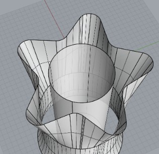
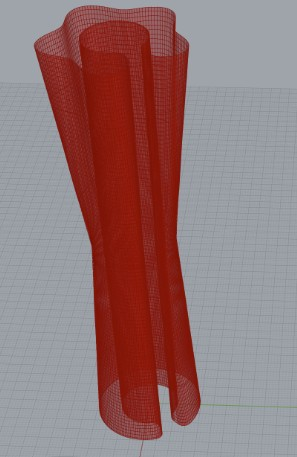
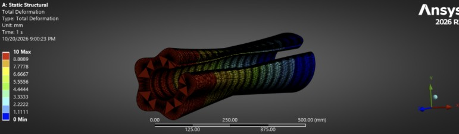

For my CEE 4745: Automation in Concrete class, we were tasked to design a structural model that will be printed using 3D printed concrete and undergo an applied loading. We were given creative freedom in developing our designs, and our inspiration came from the iconic flower-shaped cloud from the Spongebob SquarePants series. We used Rhino 3D to model our design and incorporated feedback from our initial model to improve on the design. We used ANSYS to inform our understanding of how the structure is expected to respond under applied loading conditions and locations in the bar that needed additional reinforcement.